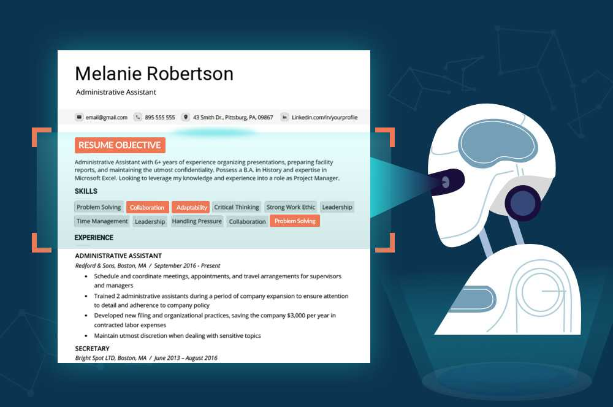
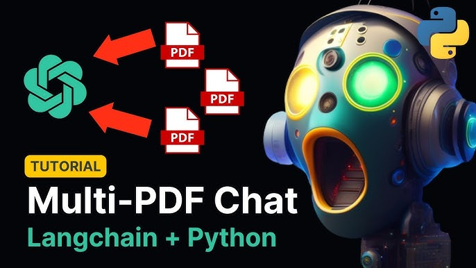

This project focuses on creating a Text-to-SQL Query Conversion Application using Google Gemini Pro, enabling seamless interaction with SQL databases.
The application facilitates the translation of natura language text into SQL queries, retrieving relevant data based on user inquiries.
Key steps include database setup, prompt definition, model integration, and interface development for user-friendly interaction.
Technology Stack: Python, Database Management (SQLite), Natural Language Processing (NLP), Model Integration (Google Gemini Pro), User Interface Development (Streamlit).

Developed a Python-based application utilizing the YouTube Transcript API and Google's Gemini Pro GenerativeAI.
Enabled transcript extraction and automatic summarization of YouTube videos. Delivered detailed summaries with key insights and essential information. Provided a user-friendly interface for easy input of YouTube video links.
Technology Stack: Python, YouTube Transcript API, Google Gemini Pro GenerativeAI

Built an ATS using Google’s Gemini Pro Vision LLM model, enabling PDF resume uploads for evaluation against job descriptions. Employed the Google GenerativeAI API for text extraction and response generation, offering qualitative and quantitative assessments. Delivers feedback on alignment with job requirements, strengths, weaknesses, and a percentage match score. Empowers HR Managers and ATS scanners to efficiently assess candidate profiles, with prompt engineering enhancing system functionality.
Technology Stack: Python, Google GenerativeAI API, PDF2Image , Streamlit.

The RAG application is a sophisticated solution designed to streamline the process of indexing and querying multiple PDF documents efficiently. Leveraging cutting-edge technologies such as Llamaindex and OpenAI, this application offers a seamless experience for users to organize, search, and retrieve information from extensive PDF libraries.